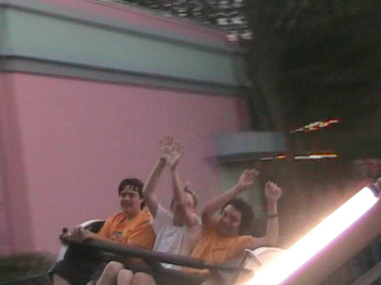

North of the Border Tour
Great Escape La Ronde Canadas Wonderland Michigans Adventure Six Flags Great America Kings Island Kennywood Knoebels Dorney Park
Up next is the awsomeness that is Kennywood.
And that awsome park we're going to has a Giant Screaming Swing!
But who cares about that when we're finally going on a rollercoaster today.
And to make that good news even better, we went on a kickass rollercoaster.
 At this point, Phantoms Revenge is good.
At this point, Phantoms Revenge is good.
But after this amazing drop, that's when it all starts to go crazy.
 See this part of the ride, this is one of the few moments where you DON'T get airtime. But it's still great as it has alot of laterals.
See this part of the ride, this is one of the few moments where you DON'T get airtime. But it's still great as it has alot of laterals.
Speaking of alot of laterals.
 Man, you really do need a partner to ride Thunderbolt. That sucks, because I know alot of single guys who would love this ride.
Man, you really do need a partner to ride Thunderbolt. That sucks, because I know alot of single guys who would love this ride.
 Hello Random People.
Hello Random People.
Continuing the tradition of old woodies, we rode Jackrabbit next.
 What makes Jackrabbit so good is the double dip, which provides the BEST AIRTIME EVER!!!
What makes Jackrabbit so good is the double dip, which provides the BEST AIRTIME EVER!!!
There's the double dip in all it's glory.
 If you have any final words before Jackrabbit ejects you, you better say them now.
If you have any final words before Jackrabbit ejects you, you better say them now.
 Up next was another Kennywood Classic. The Potato Fries.
Up next was another Kennywood Classic. The Potato Fries.
This is much better than Hobo's Tavern.
Words can not describe the insanity that occured in there.
See this Top Spin? It is 900,000,000,000,000,000,000^1,000 times better than the Crypt @ Kings Island.
 One unique ride they have at Kennywood is the Kangaroo.
One unique ride they have at Kennywood is the Kangaroo.

This ride is awsome!
This ride is fun. Much better than Kamakazie @ the Fair.
 Oh my god! There was a classic woodie here that we forgot about.
Oh my god! There was a classic woodie here that we forgot about.
 This one is awsome because you can do some coaster racing.
This one is awsome because you can do some coaster racing.
Hey Bitches! Don't even think about winning!
 Unfortunetly, Exterminators line moved too slow for us, so we decided to not get the credit.
Unfortunetly, Exterminators line moved too slow for us, so we decided to not get the credit.
Instead, I rode Pitfall. (Yes, I meant to say I as nobody else rode Pitfall.)
 And there's no better was to end this than by riding Phantoms Revenge multiple times until the park closes.
And there's no better was to end this than by riding Phantoms Revenge multiple times until the park closes.
Knoebels
Home